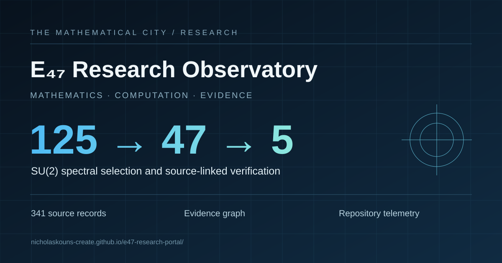
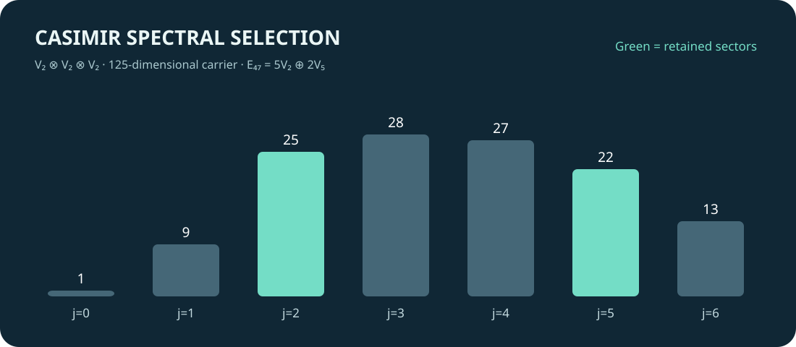

125 → 47 → 5.
One mathematical city.
Full primary-source formalism atlas, cross-platform evidence graph, reproducible traffic snapshot, and linked independent research instruments. A public reading surface—not a centralized authority over the underlying research.
Explore the Atlas ↓Original Google Sheet ↗
Exact mathematical structure
K = (C − 6I)(C − 30I)
E₄₇ = ker K ≅ 5V₂ ⊕ 2V₅
Endsu(2)(E₄₇) ≅ M₅(ℂ) ⊕ M₂(ℂ)

Primary-source Formalism Atlas
All 341 rows from the connected Google Sheets source are published as a local JSON snapshot. Search titles, exact formalism families, artifact types, and roles. The source's classifications and URLs are preserved; an absent URL is not invented.
| # | Primary-source record | Formalism / family | Role | Date | Source |
|---|
Source-linked evidence graph
Distinguishes owner-published links, external issue submissions, and independently documented maintainer responses. Select a node in the graph or open the linked evidence below.
Traffic & engagement analysis
Observed repository metadata and historical Supabase log-source counts. **Log events are not people, sessions, or unique visitors.** GitHub view, clone and referrer data remain unmeasured.